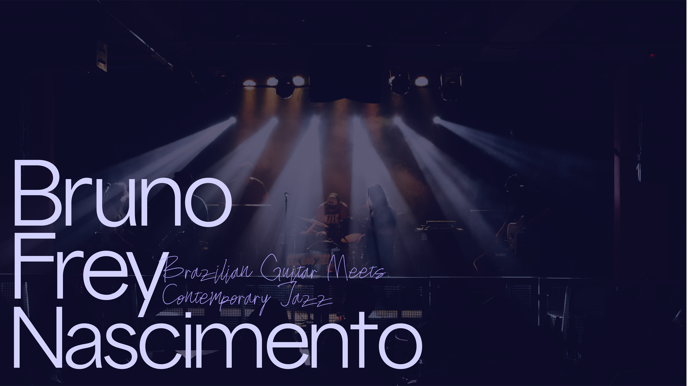
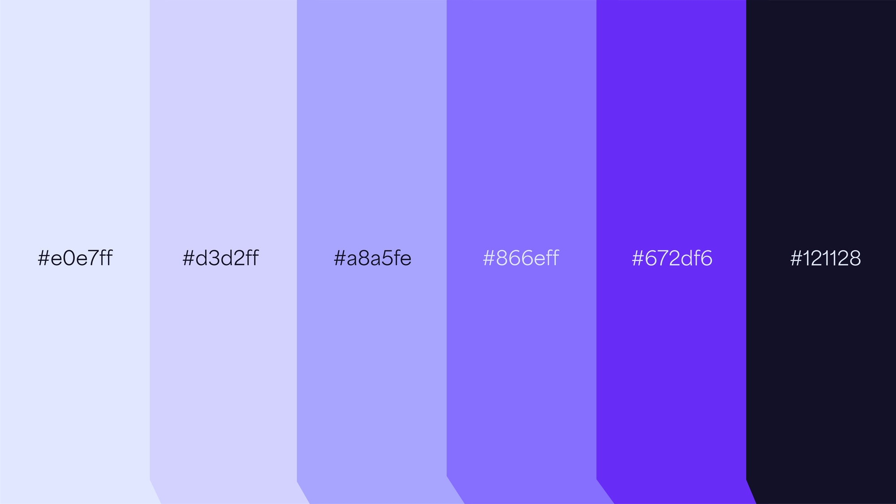
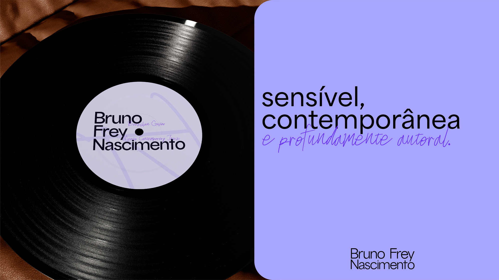
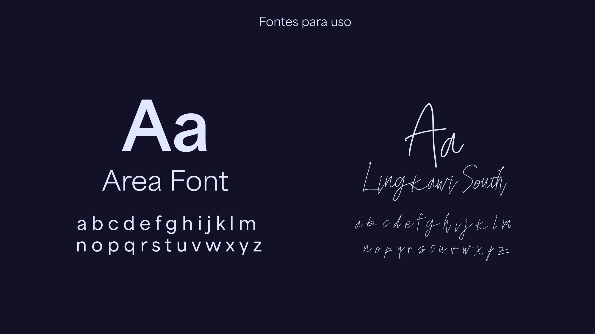
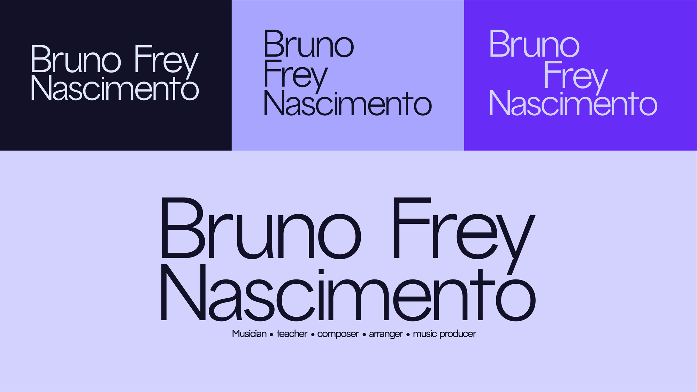

Bruno Frey
Nascimento
Site internacional para guitarrista, compositor e produtor brasileiro radicado na Alemanha, com agenda de shows, player e portfólio.






Uma presença digital para palcos internacionais.
O projeto conecta a musicalidade brasileira à cena de jazz europeia, com estrutura pensada para agendamento de shows, imprensa e booking. Projeto desenvolvido para o mercado internacional (Alemanha).